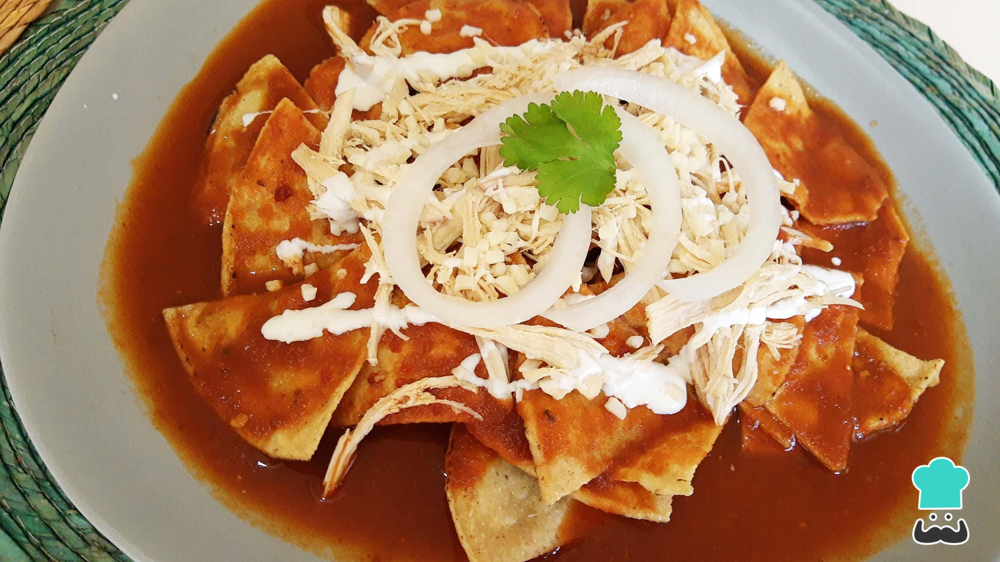

Recipe for Red Chilaquiles

Chilaquiles is a pretty common and cheap breakfast that you can find easily in Mexico. There are 2 types of chilaquiles : the red ones and the green ones.
They differ by the sauce used, which depends on the tomatoes used : red or green ones
Ingredients
For 4 servings
- 3 tomatoes
- 6 guajillo chilis
- 2 garlic cloves
- A quarter of an onion
- 1 table spoon of vegetable oil
- 2 branches of epazote
- Totopos
- Cream
- Cheese
- Nicely cut onion
Steps
- Boil the tomatoes for 3 minutes
- Add the guajillo chilis and let boil for 2 more minutes
- Take off from the fire and let everything cool down
- Blend all this mix along with the cooking water, garlic and a quarter of an onion
- Put everything in a pot and heat it up so the sauce thickens
- Distribute the totopos in a plate and add the sauce
- Add cream, cheese and more cut onions
- Optional : add a fried egg
Cochinita Pibil -->
Return to homepage